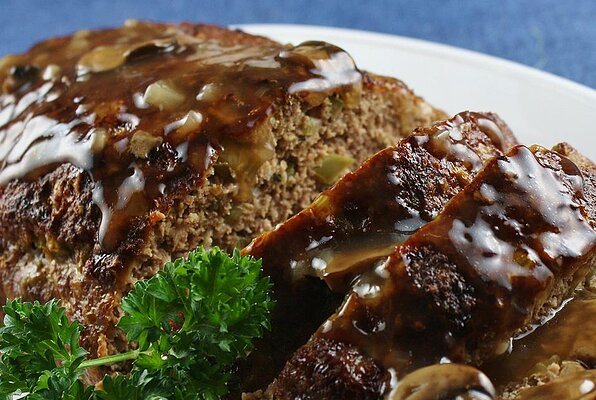

Tennessee Meatloaf

Classic southern meatload
Meatloaf is a dish of ground meat that has been combined with other ingredients and formed into the shape of a loaf, then baked or smoked. The final shape is either hand-formed on a baking tray, or pan-formed by cooking it in a loaf pan.[1] It is usually made with ground beef, although ground lamb, pork, veal, venison, poultry and seafood are also used, sometimes in combination. Vegetarian adaptations of meatloaf may use imitation meat or pulses.
The cooked meatloaf can be sliced like a loaf of bread to make individual portions. It can easily become dry; therefore, various techniques exist to keep the dish moist, like mixing in bread crumbs and egg, covering it with sauce, wrapping it, or using moisture-enhancing ingredients in the mixture, such as filling it with fatty meats, rich cheeses, or vegetables.
Ingredients
Brown Sugar Glaze:
- 1/2 cup ketchup
- 1/4 cup brown sugar
- 2 tablespoons cider vinegar
Method
Meatloaf:
- Cooking Spray
- 1 Onion, chopped
- 1/2 Green Bell Pepper, chopped
- 2 Cloves Garlic, minced
- 2 Large Eggs, lightly beaten
- 1 teaspoon dried thyme
- 1 teaspoon seasoned salt
- 1/2 teaspoon black pepper
- 2 teaspoons prepared mustard
- 2 teaspoons Worcestershire
- 1/2 teaspoon hot pepper sauce
- 1/2 cup milk
- 2/3rd cup quick cooking oats
- 1 pound ground beef
- 1/2 pound ground pork
- 1/2 pound ground veal
Method:
- Step 1: Combine ketchup, brown sugar and cider vinegar in a bowl; mix well
- Step 2: Preheat over to 350 degrees. Spray two 9x5 inch loaf pans with cooking spray or line with aluminum foil for easier cleanup.
- Step 3: Place onion and green pepper in covered microwave container and cook until softened, 1 to 2 minutes. Set aside to cool.
- Step 4: In large mixing bowl, combine garlic, eggs, thyme, seasoned salt, black pepper, mustard, Worcestershire sauce, hot sauce, milk, and oats. Mix well. Stir in cooked onion and green pepper. Add ground beef, pork, and veal. With gloved hands, work all ingredients together until completely mixed and uniform.
- Step 5: Divide meatloaf mixture in half and pat half of mixture into each prepared loaf pan. Brush loaves with half of the glaze; set remainder of glaze aside.
- Step 6: Bake in preheated oven for 50 minutes. Remove pans from oven; carefully drain fat. Brush loaves with remaining glaze. Return to oven and bake for 10 minutes more. Remove pans from oven and allow meatloaf to stand for 15 minutes before slicing.